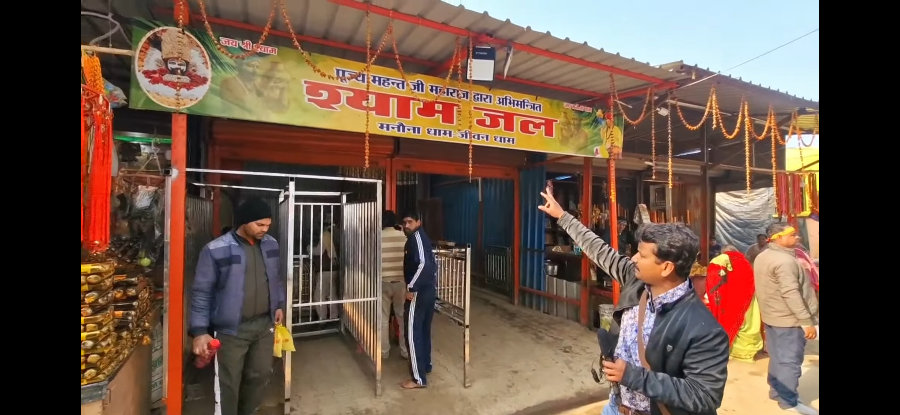
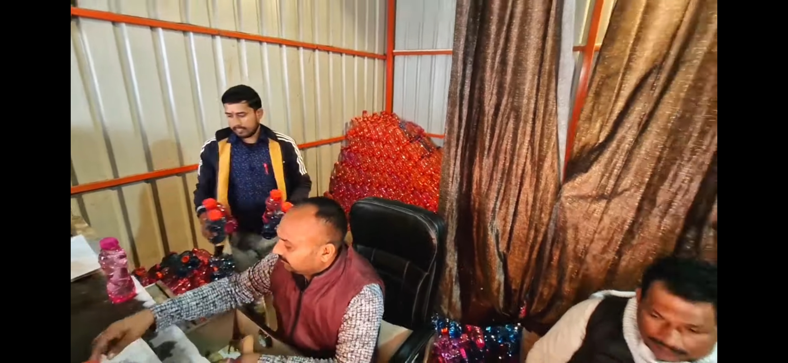
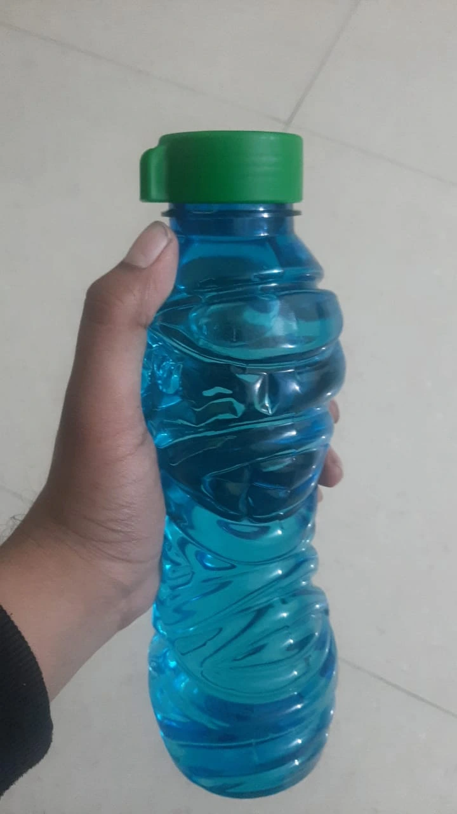
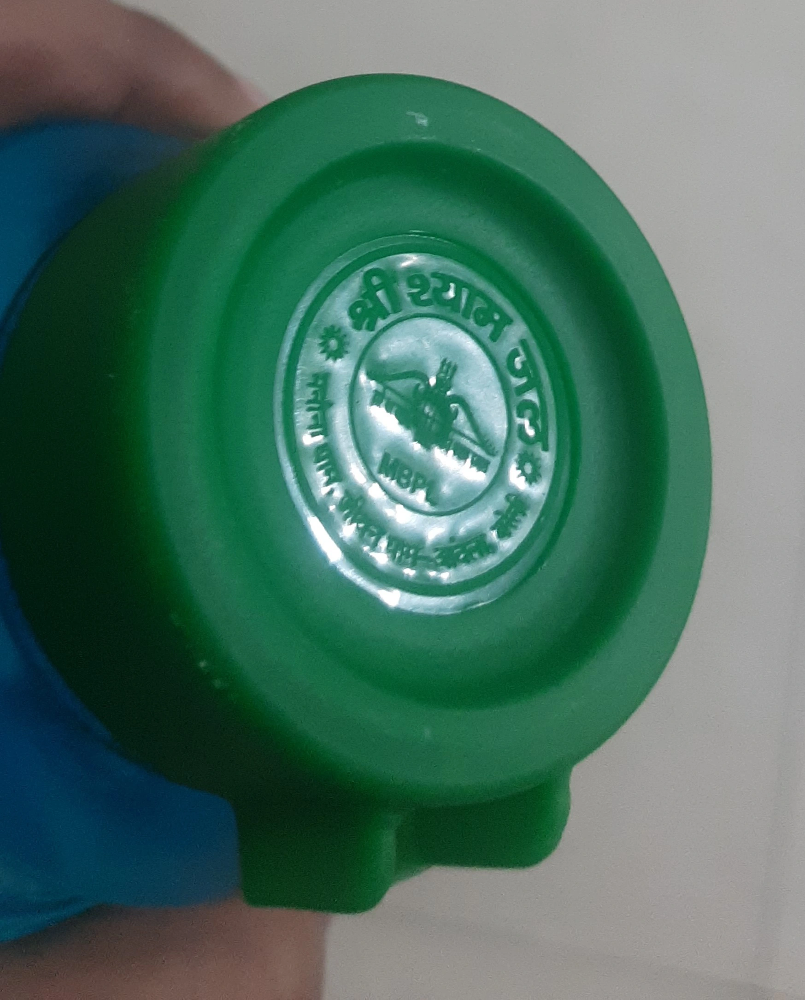

manauna dham shyam jal, manona dham shyam jal, shyam jal manauna dham, shyam jal manona dham,
shyam jal kahan se milta hai, shyam jal kaise piye, shyam jal peene se kya hota hai,
shyam jal online order, shyam jal buy online, shyam jal booking, shyam jal price,
abhimantrit jal manauna dham, manauna dham jal information, manona dham jal jaankari,
manauna dham patient token, manona dham patient token online booking, patient token information manauna dham,
manauna dham contact number, manona dham contact number, manauna dham enquiry number, manona dham enquiry number,
manauna dham address, manona dham address, manauna dham aonla bareilly up,
mahant omendra chauhan manauna dham, mahant ji manauna dham, mahant ji manona dham,
khatu shyam manauna dham, khatu shyam ji janmbhoomi manauna,
manauna dham darshan timing, manona dham darshan time,
manauna dham official website, manona dham official website,
manauna dham online booking, manona dham appointment online,
manauna dham dharamshala, manona dham dharamshala,
manauna dham hotel, manauna dham near hotels,
manona dham ka jal, manauna dham ka jal, manauna dham jal online,
shyam jal manauna, manona dham abhimantrit jal,
manauna dham map, manona dham location, manauna village aonla bareilly uttar pradesh
🙏 Shyam Jal - Poori Jaankari 🙏
Manauna Dham ke Abhimantrit Shyam Jal ke baare mein sabhi important information
⚠️ Shyam Jal se sambandhit mahatvapurn soochna
Shyam Jal mandir dwara online mangwana mana hai.
Kripya dhyaan rakhein ki kisi bhi online platform jaise
Meesho
se Shyam Jal becha jaana adhikrit nahi hai.
Shyam Jal prapt karne ke liye bhakton ko kewal aur kewal
Manauna Dham par swayam upasthit hona chahiye.
Shyam Jal se sambandhit dharmik aur aastha-aadharit jaankari ke baare mein, kripya hamara
Medical, Spiritual & Religious Information Disclaimer padhein.
Shyam Jal Kya Hai?
Shyam Jal ke baare mein
Manauna Dham Shri Khatu Shyam Ji ki Janmbhoomi hai. Yahan ka Shyam Jal
Mahant Omendra Chauhan Ji dwara Abhimantrit kiya jata hai.
Yeh jal mandir ground ke andar sirf ek official counter se milta hai.
Har bottle mein Mahant Ji ka aashirwad hota hai.
💧 Manauna Dham ka jal shareer aur ghar ki negative energies ko door karta hai
Shyam Jal Gallery




Shyam Jal Kab Aur Kaise Le?
Mahant Ji ka Nirdesh:
- Roz subah 11:55 AM se pehle ek dhakkan (cap) Shyam Jal piyen
- Jitni baar chahein utni baar le ke jaa sakte hain dham se.
- Ghar mein poore parivar ko de sakte hain
Shyam Jal ke Labh (Benefits)
- Shareer ki negative urja door hoti hai
- Shri Khatu Shyam Ji ka aashirwad milta hai
Shyam Jal Kahan Se Milta Hai?
Shyam Jal sirf Manauna Dham mandir ground ke andar ek official counter se milta hai.
Shyam Jal lene ke baad:
1️⃣ Patient Token se (jab patient present ho):
- Patient Token line mein lagna hota hai
- Token milne ke baad Mahant Ji ka darshan hota hai
- Mahant Ji apne haathon se Abhimantrit Shyam Jal dete hain
- Line comparatively fast hoti hai
2️⃣ General Mahant Ji Ashirvaad (jab patient present na ho):
- Koi bhi family member jal lene aa sakta hai
- General Shyam Jal line mein lagna hota hai
- Line lambi ho sakti hai
- Jal official counter se milta hai
⚠️ Important: Mahant Ji Wednesday aur Thursday ko nahi baithte. Kabhi-kabhi urgent kaam se anya din bhi unavailable ho sakte hain.
Bottle Kaisi Dikhti Hai?
Shyam Jal plastic bottle mein milta hai jiske cap par official Manauna Dham logo hota hai.
Har bottle ₹20 ki hai aur official counter se hi milti hai.
Frequently Asked Questions
Q: Kya main Shyam Jal roz le sakta hoon?
A: Haan, bilkul. Mahant Ji kehte hain ki roz subah 11:55 AM se pehle ek dhakkan zaroor piyen.
Q: Agar main Manauna Dham nahi aa sakta, to kya karoon?
A: Aap humse WhatsApp par baat kar sakte hain. Hum har situation mein madad karne ki koshish karte hain.
Q: Shyam Jal ka koi side effect to nahi hai?
A: Nahi. Yeh Abhimantrit jal hai jo sirf positive prabhav dalta hai. Koi side effect nahi hota.
Q: Kya main poore parivar ko de sakta hoon?
A: Haan, zaroor. Ghar mein sabko de sakte hain. Har kisi ko fayda milta hai.
Q: Patient Token kaise milta hai?
A: Patient ko khud present hona padta hai. Advance booking nahi hoti. Patient Token page par poori jaankari hai.
Q: Kya duplicate bottles bhi milti hain market mein?
A: Haan, isliye hamesha official counter se hi lein. Bahar ki koi bhi bottle authentic guarantee nahi hai.
Manauna Dham Aaiye
Khatu Shyam Ji ki Janmbhoomi ka darshan karein
Mahant Ji se aashirwad lein
Abhimantrit Shyam Jal prapt karein
Agar aap aa rahe hain to humse hotel, khana, transport book kar sakte hain - bilkul free service
India's Pilgrimage Super Platform
Every service. Every destination.
Manauna Dham is just the beginning.
Explore the full Crulio network.
Crulio Networks powers pilgrim services across India's sacred destinations — hotels, food, transport, live darshan, and more. One platform for every yatra.
Manauna Dham
🪔 Khatu Shyam Ji
🌿 Vrindavan
🕍 Jain Mandir, Ramnagar
🏔️ Hill Stations & More